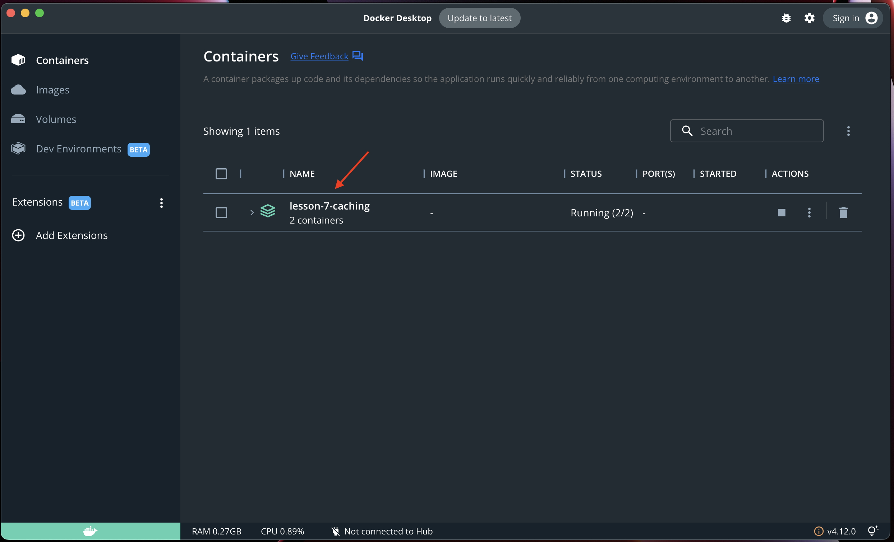
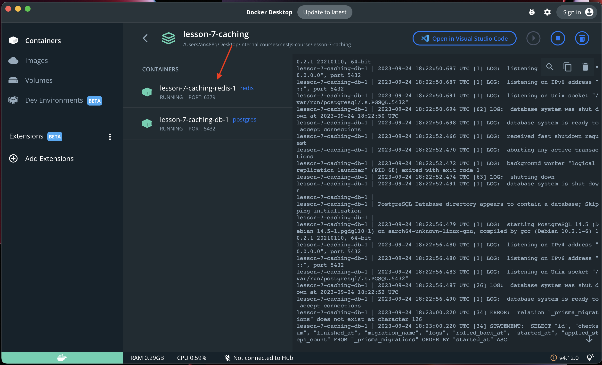
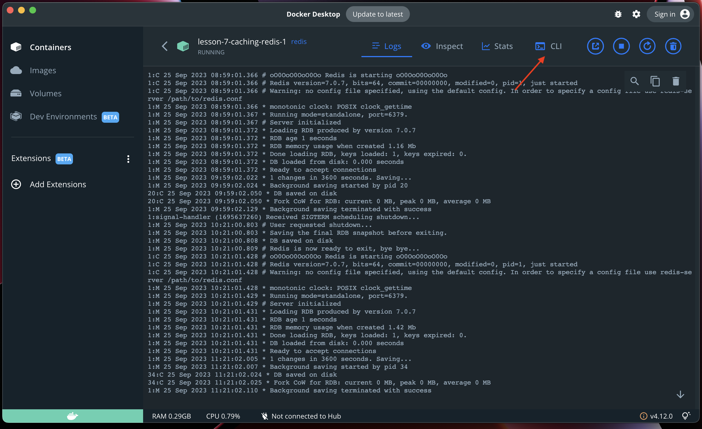
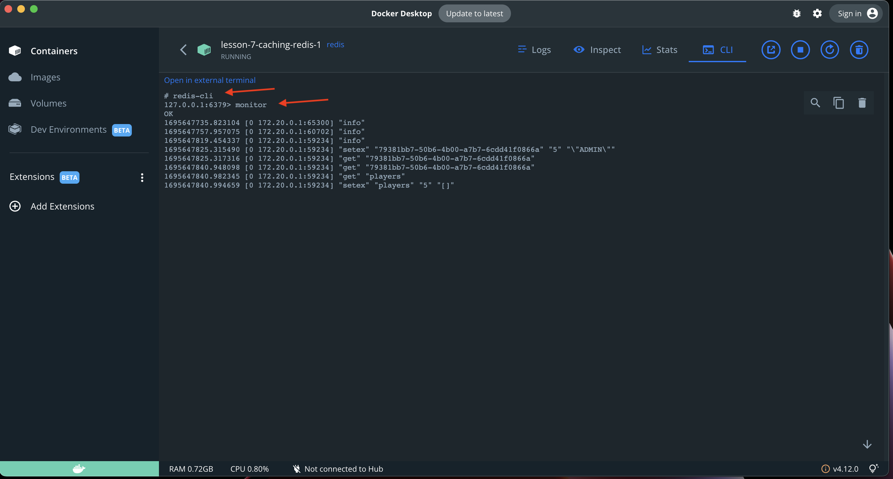

Caching is a great and simple technique that helps improve your app's performance.
It acts as a temporary data store providing high performance data access.
Reduced Load on Database.
Improved Performance.
Scalability.
Outdated data.
Complexity.
Memory Consumption.
Security and Privacy Concerns.
Read-Heavy Workloads: When read operations significantly outnumber write operations
Expensive Queries: Queries that are computationally expensive
Stable Data: Data that does not change frequently
Nest Caching: npm install @nestjs/cache-manager cache-manager
Redis: npm install redis@3.1.2 cache-manager-redis-store@2.0.0
import { Module } from '@nestjs/common';
import { CacheModule } from '@nestjs/cache-manager';
import { AppController } from './app.controller';
@Module({
imports: [CacheModule.register()],
controllers: [AppController],
})
export class AppModule {}
constructor(@Inject(CACHE_MANAGER) private cacheManager: Cache) {}
const value = await this.cacheManager.get('key');
await this.cacheManager.set('key', 'value');
await this.cacheManager.set('key', 'value', 0);
await this.cacheManager.del('key');
await this.cacheManager.reset();
@Controller()
@UseInterceptors(CacheInterceptor)
export class AppController {
@Get()
findAll(): string[] {
return [];
}
}
@Module({
imports: [CacheModule.register()],
controllers: [AppController],
providers: [
{
provide: APP_INTERCEPTOR,
useClass: CacheInterceptor,
},
],
})
export class AppModule {}
CacheModule.register({
isGlobal: true // you will not need to import CacheModule in other modules,
ttl: 5, // seconds
max: 10, // maximum number of items in cache
});
@Module({
imports: [
CacheModule.register({
store: redisStore,
// Store-specific configuration:
host: 'localhost',
port: 6379,
}),
],
controllers: [AppController],
})
export class AppModule {}
Go to docker Desktop -> Containers -> click on the running Containers
Go to redis container
Click on CLI
enter redis-cli -> use the monitor command
